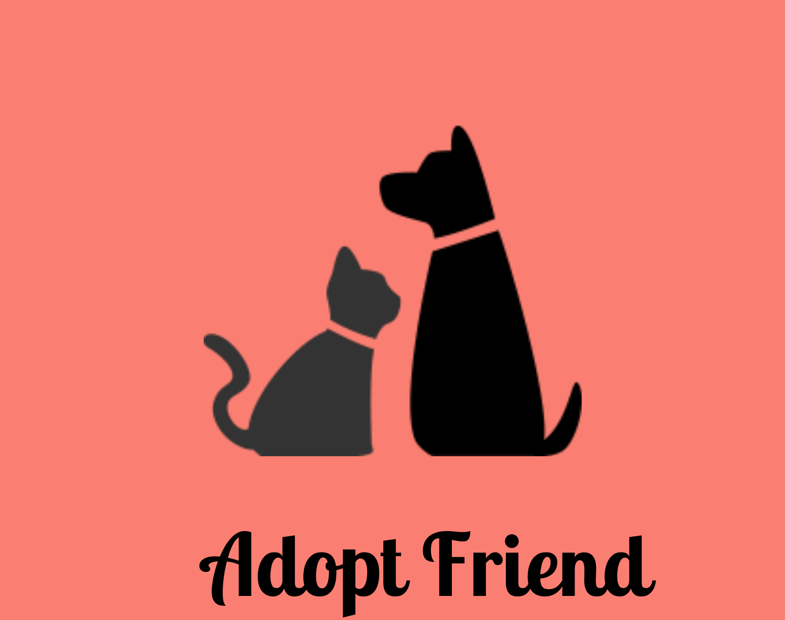

<header>
  <div class="container">
    <a routerLink="/home" class="logo" routerLinkActive="active">

      

    </a>
    <nav>
      <ul *ngIf="!isLoggedIn">
        <li><a routerLink="/quem-somos">Quem somos</a></li>
        <li><a routerLink="/login">Login</a></li>
        <li><a routerLink="/cadastros">Cadastre-se</a></li>
      </ul>
      <ul *ngIf="isLoggedIn">

        <li class="nav-item">
          <mat-icon class="nav-link" (click)="logout()">
            logout
          </mat-icon>
        </li>
        <button mat-icon-button [matMenuTriggerFor]="menu" aria-label="Example icon-button with a menu">
          <mat-icon>menu</mat-icon>
        </button>
        <mat-menu #menu="matMenu">
          <button routerLink="/users" mat-menu-item>
            <mat-icon>account_circle</mat-icon>
            <span>Meu Cadastro</span>
          </button>
          <button routerLink="/data-form" mat-menu-item>
            <mat-icon>pets</mat-icon>
            <span>Cadastrar um Pet</span>
          </button>
          <button routerLink="/pets" mat-menu-item>
            <mat-icon>favorite</mat-icon>
            <span>Adotar um Pet</span>
          </button>
        </mat-menu>
      </ul>
    </nav>
  </div>
</header>
